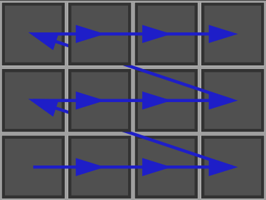

A simple example illustrating different way to scan a Khalimsky space. This program outputs these images:

| 
|
#include <iostream>
#include "DGtal/base/Common.h"
#include "DGtal/topology/KhalimskySpaceND.h"
#include "DGtal/helpers/StdDefs.h"
#include "DGtal/io/Color.h"
#include "DGtal/io/boards/Board2D.h"
using namespace std;
using namespace DGtal;
{
for ( int i = 0; i < argc; ++i )
Board2D boardScan1; // for 2D display
Board2D boardScan2; // for 2D display
Z2i::Point plow(0,0);
Z2i::Point pup(3,2);
Z2i::Domain dom (plow, pup);
boardScan1 << SetMode( dom.className(), "Paving" )
<< dom;
boardScan2 << SetMode( dom.className(), "Paving" )
<< dom;
K.init( dom.lowerBound(),dom.upperBound(), true );
Z2i::KSpace::Cell p = K.uSpel(plow);
Z2i::Vector shift;
Z2i::KSpace::Cell prec=p;
bool first=true;
// Simple way to scan Khalimsky space
do
{
boardScan1 << p;
if(first){
first=false;
prec=p;
continue;
}
// Drawing the scan arrows
boardScan1.setPenColor( Color( 30, 30, 200 ));
prec=p;
}
// Other way to scan Khalimsky space by controlling axis order
Z2i::Vector shiftq;
Z2i::KSpace::Cell precq = q;
bool firstq = true;
using KPS = Z2i::KPreSpace;
{
{
q = K.uCell( qq );
boardScan2 << q;
if(firstq){
firstq = false;
precq = q;
continue;
}
// Drawing the scan arrows
boardScan2.setPenColor( Color( 30, 30, 200 ));
Display2DFactory::draw(boardScan2, shiftq, K.uCoords(precq));
precq = q;
}
}
boardScan1.saveSVG("khalimskySpaceScanner1.svg");
boardScan1.saveFIG("khalimskySpaceScanner1.fig");
boardScan2.saveSVG("khalimskySpaceScanner2.svg");
boardScan2.saveFIG("khalimskySpaceScanner2.fig");
return 0;
}
// //
void beginBlock(const std::string &keyword="")
std::ostream & info()
DGtal is the top-level namespace which contains all DGtal functions and types.
Definition: ClosedIntegerHalfPlane.h:49
void draw(const Iterator &itb, const Iterator &ite, Board &aBoard)
Definition: testSegmentation.cpp:75